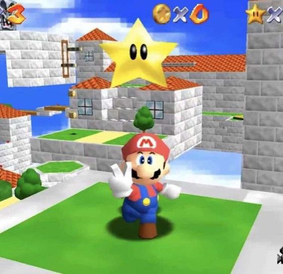
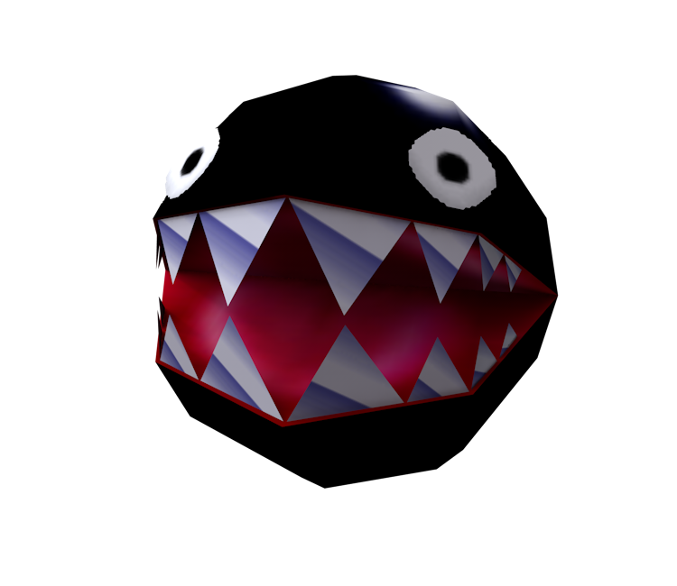
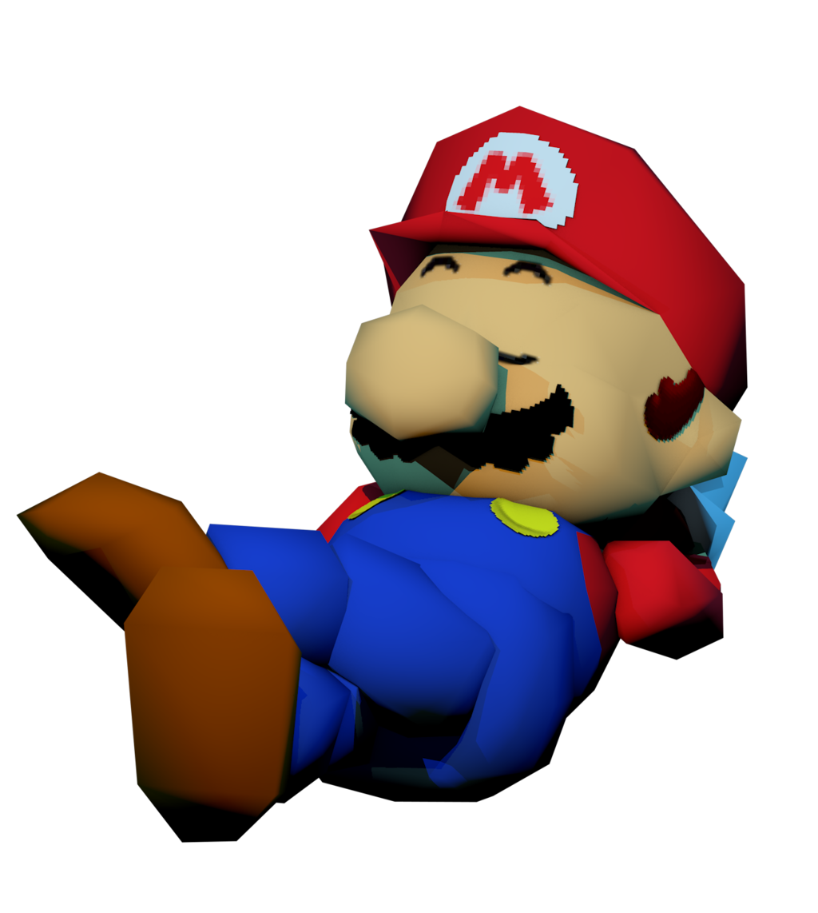

Mario 64
The Beginning of an Era
From Wikipedia, the free encyclopedia
Super Mario 64 is a 1996 platform game developed and published by Nintendo for the Nintendo 64. It was released in Japan and North America in 1996 and PAL regions in 1997. It is the first Super Mario game to feature 3D gameplay, combining traditional Super Mario gameplay, visual style, and characters in a large open world. In the game, Bowser, the primary antagonist of the Super Mario franchise, invades Princess Peach's castle and hides the castle's sources of protection, the Power Stars, in many different worlds inside magical paintings. As Mario, the player collects Power Stars to unlock enough of Princess Peach's castle to get to Bowser and rescue Princess Peach.
Super Mario 64 has been considered one of the greatest video games of all time. Numerous developers have cited it as an influence on 3D platform games, with its dynamic camera system and 360-degree analog control establishing a new archetype for the genre, much as Super Mario Bros. did for side-scrolling platform games. It was remade as Super Mario 64 DS for the Nintendo DS in 2004, and has been ported to other Nintendo consoles since. The game has attracted a cult following, spawning many fangames and mods, a large speedrunning presence, and enduring rumors surrounding game features.
Plot
The game begins with a letter from Princess Peach inviting Mario to come to her castle for a cake she has baked for him. When he arrives, Mario discovers that Bowser has invaded the castle and imprisoned the princess and her servants within its walls using the power of the castle's 120 Power Stars. The Power Stars are hidden in the castle's paintings, which serve as portals to other worlds where Bowser's minions keep watch over the Stars. Mario explores the castle and enters these worlds, gaining access to more rooms as he recovers more Stars. Mario unlocks two doors to different floors of the castle with keys obtained by defeating Bowser in hidden worlds. After getting at least 70 of the 120 Stars, Mario breaks the curse of the endless stairs that block the entrance to Bowser's final hiding place. After Mario defeats Bowser in the final battle, and Bowser escapes, swearing revenge, he obtains a special Power Star which gives him the Wing Cap, and he flies back to the castle's courtyard. Peach is released from the stained-glass window above the castle's entrance, and she rewards Mario by kissing him on the nose and baking the cake that she had promised him.
Critical Reviews
Super Mario 64 received critical acclaim, with a score of 94 out of 100 from review aggregator Metacritic based on thirteen reviews, and a score of 96% from review aggregator GameRankings, which ranked it the eighteenth best video game of all time based on twenty-two reviews.
Awards
Super Mario 64 won numerous awards, including various "Game of the Year" honors by members of the gaming media, and in Nintendo's own best-selling Player's Choice selection . It has been placed high on "the greatest games of all time" lists by many reviewers, including IGN, Game Informer, Edge, Official Nintendo Magazine, Electronic Gaming Monthly, and Nintendo Power. Electronic Gaming Monthly awarded it a Gold award in its initial review, and it won Electronic Gaming Monthly's Game of the Year for both editors' pick and readers' pick, and Nintendo 64 Game of the Year, Adventure Game of the Year, and Best Graphics. At the 1997 Computer Game Developers Conference, it was given Spotlight Awards for Best Use of Innovative Technology, Best Console Game, and Best Game of 1996. Maximum gave it a "Maximum Game of the Month Award" before its international release, ranking it the greatest game the magazine had ever reviewed. Digitiser ranked it the best game of 1997, above Final Fantasy VII as runner-up.
